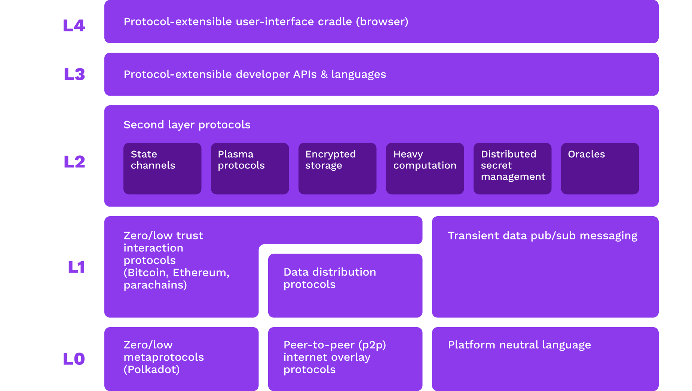
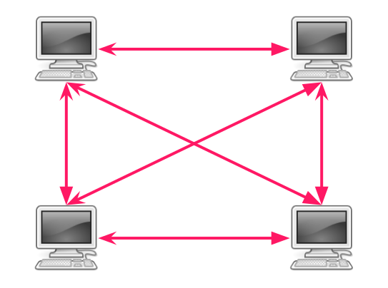
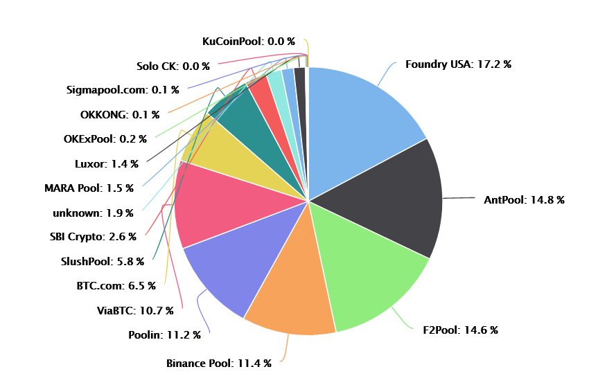
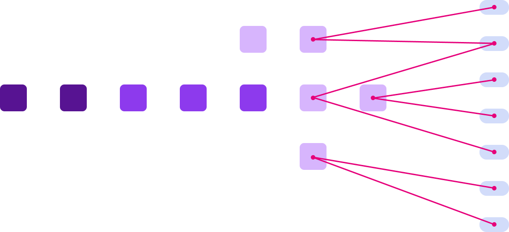
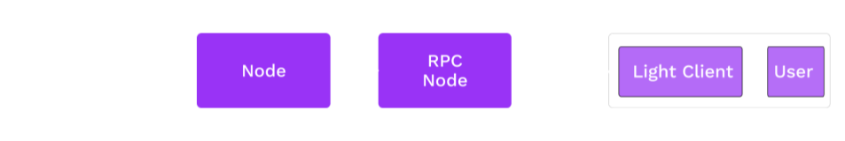
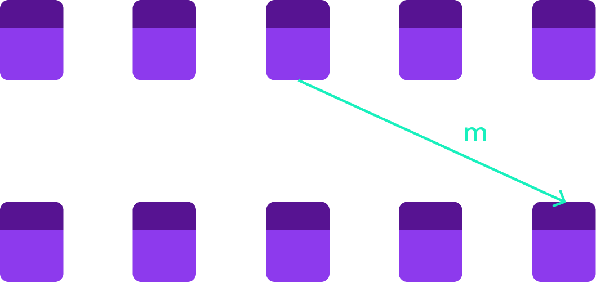
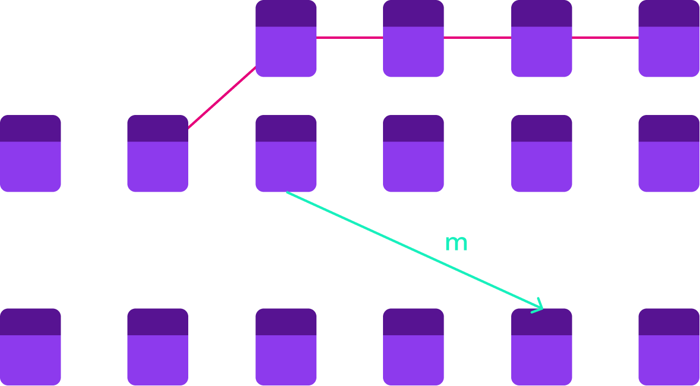

<!DOCTYPE html>
<html lang="en">
  <head>
    <meta charset="utf-8" />
    <meta name="viewport" content="width=device-width, initial-scale=1.0, maximum-scale=1.0, user-scalable=no" />

    <title>Unstoppable Applications</title>
    <link rel="shortcut icon" href="./../../../favicon.ico" />
    <link rel="stylesheet" href="./../../../dist/reset.css" />
    <link rel="stylesheet" href="./../../../dist/reveal.css" />
    <link rel="stylesheet" href="./../../../assets/styles/polkadot-theme.css" id="theme" />
    <link rel="stylesheet" href="./../../../css/highlight/shades-of-purple.css" />

    <link rel="stylesheet" href="./../../.././assets/styles/custom-classes.css" />
    <link rel="stylesheet" href="./../../.././assets/styles/polkadot-theme-base.css" />
    <link rel="stylesheet" href="./../../.././assets/styles/PBA-theme.css" />
    <link rel="stylesheet" href="./../../.././plugin/design-system/index.css" />

  </head>
  <body class="site">
    <header class="site-header">
      <a href="">
        
      </a>
      
    </header>
    <main class="site-reveal reveal">
      <article class="slides">
        <section  data-markdown><script type="text/template">

# Unstoppable Applications
</script></section><section  data-markdown><script type="text/template">
<widget-speaker name="Joe Petrowski" position="Common Good Parachains Team Lead at Web3 Foundation" image="/assets/img/0-Shared/people/joe.png" github=" joepetrowski" twitter="joepetrowski" linkedin="joe-petrowski-73538929" matrix="joe:web3.foundation"></widget-speaker>
</script></section><section  data-markdown><script type="text/template">
## Motivation

So far, we have discussed state machines and consensus.

But spent little time addressing the contexts in which they operate.
</script></section><section  data-markdown><script type="text/template">
## Attacking Web3


<aside class="notes"><p>Source: <a href="https://xkcd.com/538/">XKCD</a></p>
</aside></script></section><section  data-markdown><script type="text/template">
## People over Platforms

Web3 should prioritise _people_ over _platforms_.

Platforms are OK as service providers, but peer-to-peer guarantees must be upheld without requiring trust in a service provider.
</script></section><section  data-markdown><script type="text/template">
## Web3 Tech Stack


</script></section><section  data-markdown><script type="text/template">
## A Lot More Than Blockchain

Blockchains only form one part of the stack. Web3 applications must prevent attacks at all layers. For discussion today:

<widget-text center>

- Networking
- Consensus
- Node access
- Validator power
- Inter-consensus system trust

</widget-text>
</script></section><section  data-markdown><script type="text/template">
## Criticisms

There are valid criticisms of how many blockchain applications operate today.

<widget-text center>

- Mining pools (and other centralising factors)
- RPC providers
- Bridges

</widget-text>

We will discuss these and what we're building to realise a better stack.
</script></section><section  data-markdown><script type="text/template">
# Network Level
</script></section><section  data-markdown><script type="text/template">
## Peer-to-Peer Networks

<center>



</center>
</script></section><section  data-markdown><script type="text/template">
## Network Attacks

<widget-text center>

- Entry nodes and peer discovery
- Data center faults
- Traffic analysis and targeted takedowns
</script></section><section  data-markdown><script type="text/template">
# Consensus
</script></section><section  data-markdown><script type="text/template">
## Mining Pools

Proof of Work authority sets have no finite bound. But people like to organise.

We actually don't want authority sets to organise because it creates risk.
</script></section><section  data-markdown><script type="text/template">
## Mining Pools



Source: [Buy Bitcoin Worldwide](https://www.buybitcoinworldwide.com/pages/mining/pools/img/pool-graph.png)
</script></section><section  data-markdown><script type="text/template">
## Security Dilution

Security is always a finite resource:

<widget-text center>

- Centralised: Cost of corruption/influence
- Proof of Work: Number of CPUs in the world
- Proof of Stake: Value (by definition, finite)
</script></section><section  data-markdown><script type="text/template">
## Security Dilution

Consensus systems compete for security, and they have reason to attack each other.

Emergence of obscure/niche "Proof of X" algorithms to shelter from attack only goes so far.
</script></section><section  data-markdown><script type="text/template">
## Proof of Work Battles


Source: [Dollar Cost Bitcoin](https://dollarcostbitcoin.com/tools/51attack)
</script></section><section  data-markdown><script type="text/template">
## Authority Misbehavior

<widget-text center>

- Lack of availability
- Equivocation
  - Authorship: Proposing mutually exclusive chains
  - Finality: Voting for mutually exclusive chains to be final
- Invalidity
</script></section><section  data-markdown><script type="text/template">
## Equivocation


</script></section><section  data-markdown><script type="text/template">
## Provability

Some types of misbehavior are harder to prove than others.

Equivocation is simple: Someone can just produce two signed messages as cryptographic proof.

Others rely on challenge-response games and dispute resolution.
</script></section><section  data-markdown><script type="text/template">
## Validator Consolidation

How many validators does a system need?

Higher numbers should lead to a decrease in the ability for entities to collude.

But validators are expensive, both economically and computationally.
</script></section><section  data-markdown><script type="text/template">
## Authority from Accountability

Authority should imply accountability.

No matter how you design an authority selection mechanism, some people will have a privileged position within it.

Those who _choose_ to become authorities should be liable for their actions.
</script></section><section  data-markdown><script type="text/template">
## Polkadot Pause

A few interesting design decisions in Polkadot w/r/t its architecture:

- More validators increases the state transition throughput of the network.
- Individual shards have full economic freedom by being members of a larger consensus system.
- Superlinear slashing puts colluding validators at existential risk (while well-meaning ones should have little to worry about).
</script></section><section  data-markdown><script type="text/template">
# Network Access
</script></section><section  data-markdown><script type="text/template">
## Web2 Access

Heavily based on trust.


Any cryptographic guarantees are between central authority and users.
</script></section><section  data-markdown><script type="text/template">
## Blockchain Node Queries

In an ideal case, application users would run nodes themselves, so as to not trust a provider.

But nodes can consume large amounts of storage, network, and CPU resources.
</script></section><section  data-markdown><script type="text/template">
## Node Queries

So, most people outsource.


These service providers wield large amounts of power to deceive, censor, and surveil.
</script></section><section  data-markdown><script type="text/template">
## Multi-Chain Applications

If running _one_ node is burdensome, try multiple.


</script></section><section  data-markdown><script type="text/template">
## Light Clients

Light clients only store block headers and consensus-critical information.

- Allow users to query full nodes from RPC providers,
- but take advantage of hash-based data structure to _verify_ the information coming from the provider.
- Low storage and bandwidth requirements (use in a browser extension or mobile device).
</script></section><section  data-markdown><script type="text/template">
## Light Clients


</script></section><section  data-markdown><script type="text/template">
# Validator Power
</script></section><section  data-markdown><script type="text/template">
## STF Upgrades

Validators all execute the state transition function.

What happens when people (<--intentionally vague, for now) want to upgrade the STF?
</script></section><section  data-markdown><script type="text/template">
## Hard Forks

Traditionally, all nodes need to upgrade their software to apply any upgrades.

This gives node providers huge power: Even if every other group wants to make a change, "authority nodes" can refuse to upgrade.
</script></section><section  data-markdown><script type="text/template">
## Hard Forks

If the chain does split into two, who decides which chain is which?

<widget-text center>

- Greater hashpower or value at stake
- Whatever is recognised by service providers
- Whatever is recognised by data aggregators

**But not the stakeholders of the system**

</widget-text>
</script></section><section  data-markdown><script type="text/template">
## Hard Forks and Substrate

Substrate separates the state transition _logic_ from the _executor_.

The executor is WebAssembly. The STF is part of the state and can be upgraded.

**Authority nodes should _execute_ the STF, not be trusted to _choose_ it.**
</script></section><section  data-markdown><script type="text/template">
## Transaction Censorship and Ordering

Block authors choose the transactions they include and in what order.

<widget-text center>

- Censorship attacks
- "Miner extractable value"
</script></section><section  data-markdown><script type="text/template">
## Censorship

There are a lot more system users than system authorities.

However, every transaction must be included by an authority.

If no authority will include a user's transaction, they do not have permissionless access.
</script></section><section  data-markdown><script type="text/template">
## Censorship

But all nodes _can_ censor but still uphold the expectation that the system is available to everyone.

As long as no transaction is in the intersection of the censored sets.

Deterministic finality helps.
</script></section><section  data-markdown><script type="text/template">
## Miner Extractable Value

A measure of the value that block authors can extract based on their knowledge of pending transactions and ability to order them.

<widget-text center>

- Frontrunning
- Backrunning
- Sandwiching
</script></section><section  data-markdown><script type="text/template">
## Revisiting Transactional and Free Execution

Transactional execution means that logic must be "woken up" by transactions.

Free execution provides more power to application developers to deliver behavior guarantees. Function calls can be scheduled and automatically dispatched. Uses include:

<widget-text center>

- Automated decision enactment
- Logic to execute at the start or end of each block
- "Cleanup" tasks when blocks are not full
</script></section><section  data-markdown><script type="text/template">
# Dependencies
</script></section><section  data-markdown><script type="text/template">
## Separate Consensus Systems

Two consensus systems may have differing levels of security and definitions of finality.

When these systems interact, they must trust messages from the other system.
</script></section><section  data-markdown><script type="text/template">
## Reversions


</script></section><section  data-markdown><script type="text/template">
## Reversions


</script></section><section  data-markdown><script type="text/template">
## Blockchain Wars

Systems with high security have the incentive to attack systems with low security whom they perceive as competitors.
</script></section><section  data-markdown><script type="text/template">
## Trustless Messaging

In order to handle messages _without trust_, systems must share common finality guarantees.

`A` should never process a message from `B`, where `B` is reverted and `A` is not.
</script></section><section  data-markdown><script type="text/template">
## A Note on Synchronicity

Smart contracts on a single chain (e.g. Ethereum) can interact trustlessly because of their shared view of finality.

Asynchronous systems can also share finality (i.e., be members of the same consensus system).
</script></section><section  data-markdown><script type="text/template">
## Wrap Up

End of Module 3. Goal is that you now have the primitives and concepts necessary to dive into Substrate and Polkadot and start building unstoppable Web3 applications.
</script></section>
      </article>
    </main>

    <script src="./../../../dist/reveal.js"></script>
    <script src="./../../../plugin/markdown/markdown.js"></script>
    <script src="./../../../plugin/highlight/highlight.js"></script>
    <script src="./../../../plugin/zoom/zoom.js"></script>
    <script src="./../../../plugin/notes/notes.js"></script>
    <script src="./../../../plugin/math/math.js"></script>

    <script type="module">
      import DesignSystem from "./../../../plugin/design-system/design-system.js"

      function extend() {
        var target = {};
        for (var i = 0; i < arguments.length; i++) {
          var source = arguments[i];
          for (var key in source) {
            if (source.hasOwnProperty(key)) {
              target[key] = source[key];
            }
          }
        }
        return target;
      }

      // default options to init reveal.js
      var defaultOptions = {
        controls: true,
        progress: true,
        history: true,
        center: true,
        transition: 'default', // none/fade/slide/convex/concave/zoom
        plugins: [
          RevealMarkdown,
          RevealHighlight,
          RevealZoom,
          RevealNotes,
          RevealMath,
          DesignSystem
        ]
      };

      // options from URL query string
      const queryOptions = Reveal().getQueryHash() || {};

      const options = extend(defaultOptions, {"width":1400,"height":900,"margin":0,"minScale":0.2,"maxScale":2,"transition":"none","controls":true,"progress":true,"center":true,"slideNumber":true,"backgroundTransition":"fade"}, queryOptions);
      options.baseUrl = '';
      Reveal.initialize(options);
    </script>
  </body>
</html>
